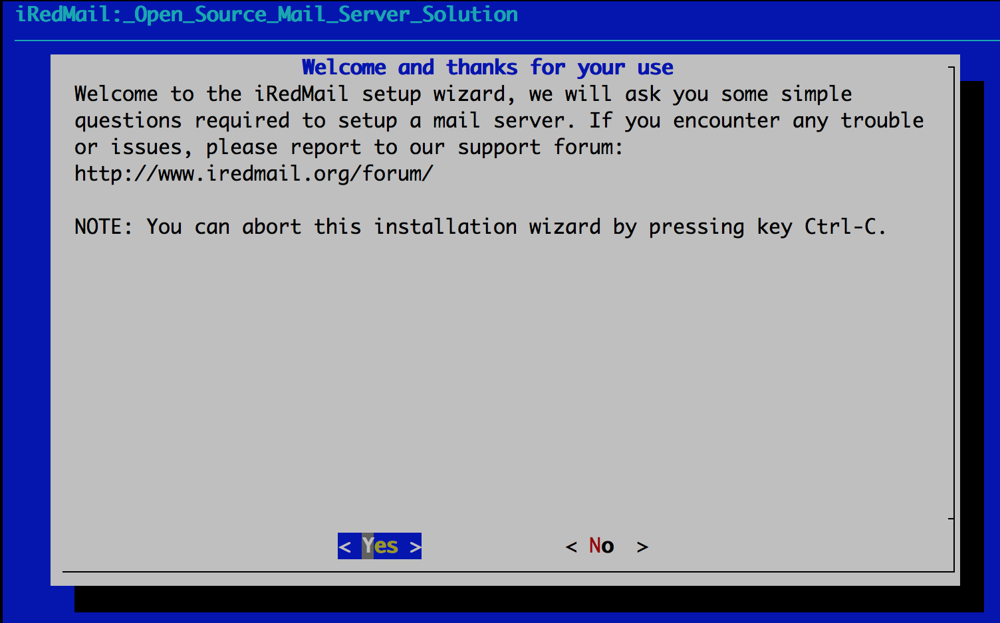
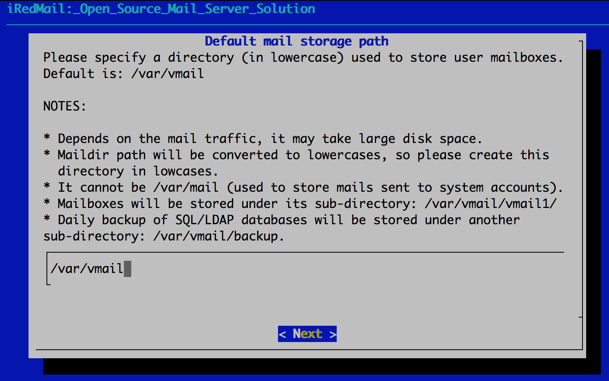
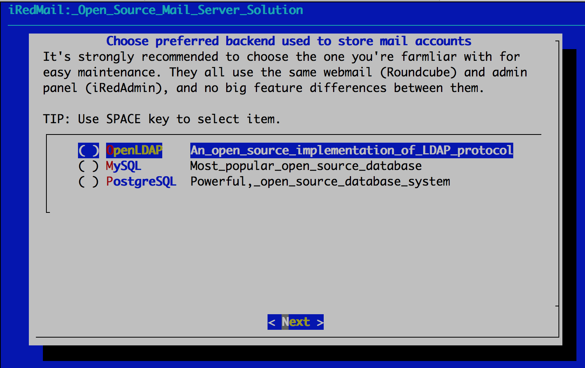
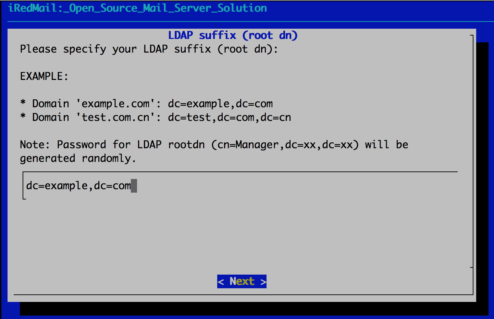
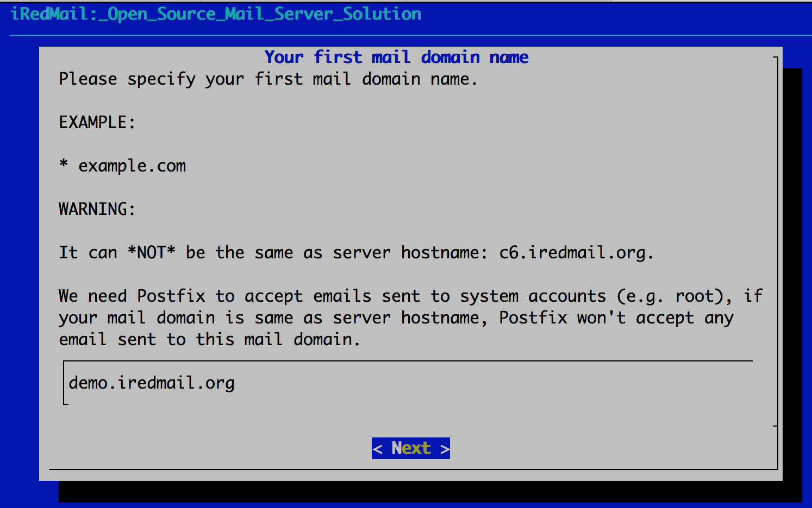
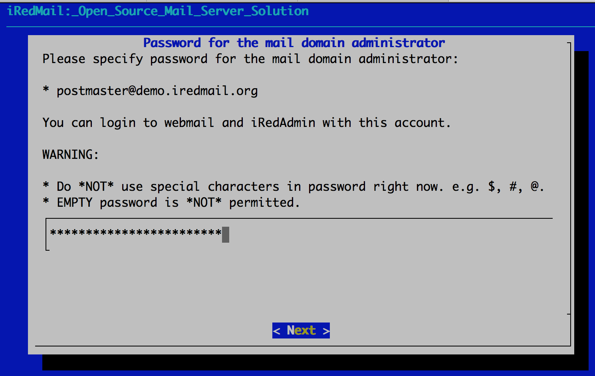
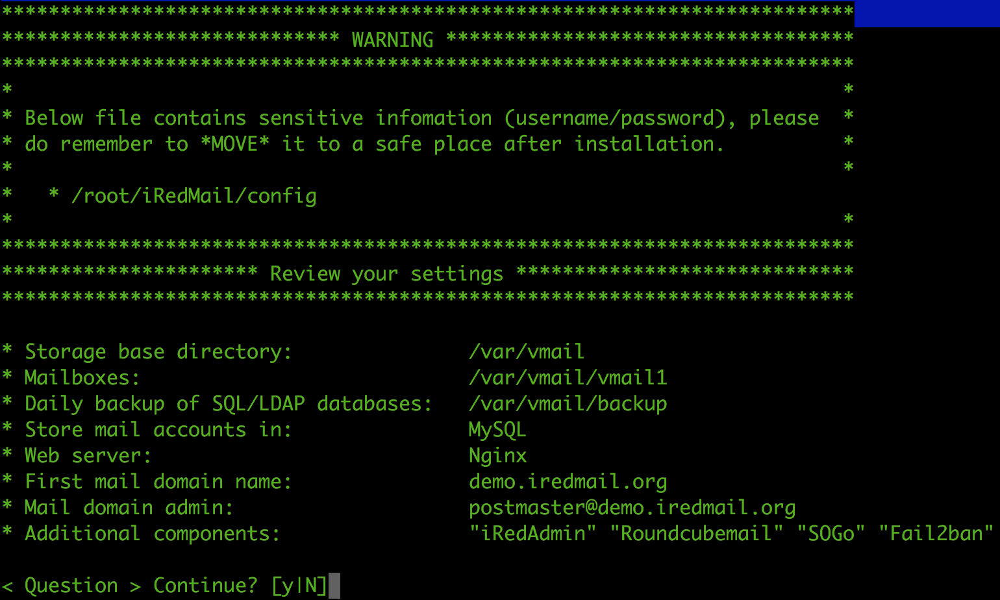

mx.example.com and IP address 172.16.244.254 for our Jail server.Notes:
IMPORTANT WARNING: iRedMail is designed to be deployed on a FRESH server system, which means your server does NOT have mail related components installed, e.g. MySQL, OpenLDAP, Postfix, Dovecot, Amavisd, etc. iRedMail will install and configure them for you automatically. Otherwise it may override your existing files/configurations althought it will backup files before modifying, and it may not be working as expected.
sysutils/ezjail for FreeBSD.# cd /usr/ports/sysutils/ezjail/
# make install clean
/etc/rc.conf:# Start ezjail while system start up
ezjail_enable="YES"
/etc/rc.conf.# reboot
# ezjail-admin install -p
Create Jail
mx.example.com172.16.244.254 to network interface em0/jails/mx.example.com# ezjail-admin create -r /jails/mx.example.com mx.example.com 'em0|172.16.244.254'
# service ezjail restart
# ezjail-admin list
STA JID IP Hostname Root Directory
--- ---- ---------------- --------------------------------- ------------------------
DS 1 172.16.244.254 mx.example.com /jails/mx.example.com
We can now enter this Jail with below command:
# ezjail-admin console mx.example.com
/etc/resolv.conf with valid DNS server address(es). For example:# File: /etc/resolv.conf
nameserver 172.16.244.2
bash-static, it's required by iRedMail.# -- For FreeBSD 9 or earlier releases --
# pkg_add -r bash-static
# -- For FreeBSD 10 or later releases --
# pkg install bash-static
It's now ready to start iRedMail installer inside Jail, it will ask you several simple questions, that's all required to setup a full-featured mail server.
# bash # <- start bash shell, REQUIRED
# cd /root/iRedMail/
# LOCAL_ADDRESS='172.16.244.254' bash iRedMail.sh
Note to Chinese users
Our domain name iredmail.org has been blocked in mainland China for
years (since Jun 04, 2011), please run command below to finish the
installation:
IREDMAIL_MIRROR='http://42.159.241.31' bash iRedMail.sh

/var/vmail/.
Note
There's no big difference between available backends, so it's strongly recommended to choose the one you're familiar with for easier management and maintenance after installation.


To MySQL/MariaDB/PostgreSQL users
If you choose to store mail accounts in MySQL/MariaDB/PostgreSQL, iRedMail
installer will generate a random, strong password for you. You can find it
in file iRedMail.tips.

Note: This account is an admin account and a mail user. That means you can login to webmail and admin panel (iRedAdmin) with this account, login username is full email address.


After answered above questions, iRedMail installer will ask you to review and
confirm to start installation. It will install and configure required packages
automatically. Type y or Y and press Enter to start.

The weakest part of a mail server is user's weak password. Spammers don't want to hack your server, they just want to send spam from your server. Please ALWAYS ALWAYS ALWAYS force users to use a strong password.
Read file /root/iRedMail-x.y.z/iRedMail.tips first, it contains:
After installation successfully completed, you can access web-based programs
if you choose to install them. Replace your_server below by your real server
hostname or IP address.
?config=smtp for SMTP log)Please post all issues, feedbacks, feature requests, suggestions in our online support forum, it's more responsible than you expected.
ping in Jail/etc/sysctl.conf to allow to use ping command
inside Jail:security.jail.allow_raw_sockets=1
/usr/local/etc/ezjail/mx_example_com to allow ping inside Jail:export jail_mx_example_com_parameters="allow.raw_sockets=1"
/usr/ports/distfiles with JailTo share /usr/ports/distfiles/ with Jail, please append below line in
/etc/fstab.mx_example_com:
Jail will set ports tree directory to
/var/portsinstead of/usr/portsin/jails/mx.example.com/etc/make.confby default, you can either use this default setting or change it to/usr/ports.
# Part of file: /etc/fstab.mx_example.com
/usr/ports/distfiles /jails/mx.example.com/basejail/var/ports/distfiles nullfs rw 0 0
Create directory /usr/jails/basejail/var/ports/distfiles:
# mkdir /usr/jails/basejail/var/ports/distfiles